NCERT Solutions For Class 10 Science Chapter 5 Periodic Classification Of Elements: Students who are in search for periodic classification of elements class 10 question and answers can refer to this article. Working on NCERT Solutions for class 10 science chapter 5 notes will help candidates to build a strong foundation over the subject Science. NCERT Solutions For Class 10 Science Chapter 5 Periodic Classification Of Elements will further help in clearing the UG competitive exams.
Going through this periodic classification of elements class 10 NCERT activity solutions will help candidates to understand the theory behind every concept which in turn helps candidates to solve the questions at the end of every topics and subtopic. Read on to find everything about the periodic classification of elements class 10 question and answers.
NCERT Solutions for Class 10 Science Chapter 5 Periodic Classification of Elements
Before getting into the details of NCERT Solutions For Class 10 Science Chapter 5 Periodic Classification Of Elements, let’s have an overview of topics & subtopics under NCERT Solutions for class 10 science chapter 5 notes:
- Periodic Classification Of Elements
- Making Order Out Of Chaos – Early Attempts At The Classification Of Elements
- Making Order Out Of Chaos – Mendeléev’S Periodic Table
- Making Order Out Of Chaos – The Modern Periodic Table
Free download NCERT Solutions for Class 10 Science Chapter 5 Periodic Classification Of Elements PDF in Hindi Medium as well as in English Medium for CBSE, Uttarakhand, Bihar, MP Board, Gujarat Board, and UP Board students, who are using NCERT Books based on updated CBSE Syllabus for the session 2019-20.
- तत्वों के आवर्त वर्गीकरण कक्षा 10 विज्ञान हिंदी में
- Class 10 Periodic Classification of Elements Important Questions
- Periodic Classification of Elements Class 10 Notes
- Periodic Classification of Elements NCERT Exemplar Solutions
- Periodic Classification of Elements Class 10 Extra Questions
- Class 10 Periodic Classification of Elements Mind Map
NCERT Solutions for Class 10 Science Chapter 5 Intext Questions
Page Number: 81
Question 1
Did Dobereiner’s triads also exist in the columns of Newlands’ Octaves ? Compare and find out.
Answer:
Yes, Dobereiner’s triads also existed in the columns of Newland’s Octaves.
For example, Li, Na, K.
If we consider lithium (Li) as the first element, then sodium (Na) is eighth element. If we consider sodium as the first element, then potassium is the eighth element.
Question 2
What were the limitations of Dobereiner’s classification ?
Answer:
It failed to arrange all the then known elements in the form of triads of elements having similar chemical properties. Dobereiner could identify only three triads from the elements known that time.
Question 3
What were the limitations of Newlands’ law of octaves ?
Answer:
(i) Newlands law of octaves was applicable to the classification of elements upto calcium only. After calcium every eighth element did not possess the properties similar to that of the first element.
(ii) Newlands assumed that only 56 elements existed in nature and no more elements would be discovered in the future. But later on, several new elements were discovered whose properties did not fit into Newlands’ law of Octaves.
(iii) In order to fit elements into his table, Newlands put even two elements together in one slot and that too in the column of unlike elements having very different properties.
For example, the two elements cobalt (Co) and nickel (Ni) were put together in just one slot and that too in the column of elements like fluorine, chlorine and bromine which have very different properties from these elements.
(iv) Iron (Fe) element which resemble elements like cobalt and nickel in properties, was placed far away from these elements.
Page Number: 85
Question 1
Use Mendeleev’s Periodic Table to predict the formulae for the oxides of the following elements : K, C, Al, Si, Ba
Answer:
K2O, CO2, Al2O3, SiO2, BaO.
Question 2
Besides gallium, which other elements have since been discovered that were left by Mendeleev in his periodic table ? (any two)
Answer:
Scandium and Germanium.
Question 3
What were the criteria used by Mendeleev in creating his Periodic Table ?
Answer:
Mendeleev used the relationship between the atomic masses of the elements and their physical and chemical properties. He used similarity in physical properties, similarity in the formation of hydrides and oxides of element.
Question 4
Why do you think the noble gases are placed in a separate group ?
Answer:
Noble gases are chemically inert and are present in atmosphere in extremely low concentrations. Therefore, owing to their similar inert behaviour and similar electronic configuration, they are justified to be placed in a separate group.
Page Number: 90
Question 1
How could the modern periodic table remove various anomalies of Mendeleev’s periodic Table ?
Answer:
(i) The modern periodic table is based on atomic number, while Mendeleev’s periodic table was based on atomic mass.
(ii) The isotopes of an element have same number of protons (or atomic number). So they are alloted the same position in modern periodic table.
(iii) Cobalt and nickel are placed at 9th and 10th position respectively.
(iv) Hydrogen has been alloted special position, i.e., it is placed at the top of alkali metals in the first group.
Question 2
Name two elements you would expect to show chemical reactions similar to magnesium. What is the basis for your choice ?
Answer:
Beryllium (Be) and Calcium (Ca).
Both Be (atomic number 4) and Ca (atomic number 20) have similar electronic configuration, i.e. two electrons in outermost shells.
Be 2,2
Ca 2, 8, 8, 2
Both Be and Ca react with oxygen to give basic oxides, BeO and MgO.
Question 3
Name :
(a) three elements that have a single electron in their outermost shells.
(b) two elements that have two electrons in their outermost shells.
(c) three elements with filled outer most shells.
Answer:
(a) Lithium : Atomic number – 3(2, 1); Sodium : Atomic number – 11(2, 8, 1); Potassium : Atomic number – 19(2, 8, 8, 1).
(b) Beryllium : Atomic number – 4(2, 2); Calcium : Atomic number – 20(2, 8, 8, 2)
(c) Helium : Atomic number – 2(2); Neon : Atomic number – 10(2, 8); Argon : Atomic number – 18(2, 8, 8).
Question 4
(a) Lithium, sodium, potassium are all metals that react with water to liberate hydrogen gas. Is there any similarity in the atoms of these elements ?
(b) Helium is an unreactive gas and neon is a gas of extremely low reactivity. What, if anything, do their atoms have in common ?
Answer:
(a) Lithium, sodium and potassium all belong to the same group. The atoms of lithium, sodium and potassium all have only one electron in their outermost shells and all of these are metals. All of these react with water to form alkalies.
(b) The atoms of helium and neon have their outermost shells completely filled. Helium has its first shell completely filled, while neon has its first and second shells (K and L) completely filled.
Question 5
In the modern periodic table, which are the metals among the first ten elements ?
Answer:
The first ten elements in modern periodic table are hydrogen, helium, lithium, beryllium, boron, carbon, nitrogen, oxygen, fluorine and neon. Out of these, lithium, beryllium and boron are metals, because they have 1, 2 and 3 electrons respectively in their outermost shells.
Question 6
By considering their position in the Periodic Table, which one of the following elements would you expect to have maximum metallic characteristics ?
Ga, Ge, As, Se, Be
Answer:
Beryllium (Be). In the periodic table, the elements placed on the left show maximum metallic characteristics. Since beryllium occupies the most left position in comparison to other elements, hence it shows maximum metallic characteristics.
NCERT Solutions for Class 10 Science Chapter 5 Textbook Chapter End Questions
Question 1
Which of the following statements is not a correct statement about the trends wlien going from left to right across the periods of Periodic Table.
(a) The elements become less metallic in nature.
(b) The number of valence electrons increases.
(c) The atoms lose their electrons more easily.
(d) The oxides become more acidic.
Answer:
(c) The atoms lose their .electrons more easily.
Question 2
Element X forms a chloride with the formula XCl2, which is solid with a high melting point. X would most likely to be in the same group of the periodic table as
(a) Na
(b) Mg
(c) Al
(d) Si
Answer:
(b) Mg
Question 3
Which element has
(a) two shells, both of which are completely filled with electrons ?
(b) the electronic configuration 2, 8, 2 ?
(c) a total of three shells, with four electrons in its valence shell ?
(d) a total of two shells with three electrons in its valence shell. v
(e) twice as many electrons in its second shell as in its first shell ?
Answer:
(a) Neon (2, 8)
(b) Magnesium
(c) Silicon (2, 8, 4)
(d) Boron (2, 3)
(e) Carbon (2, 4)
Question 4
(a) What property do all elements in the same column of the Periodic Table as boron have in common ?
(b) What property do all elements in the same column of the Periodic Table . as fluorine have in common ?
Answer:
(a) Elements in the same column or group as boron have valency of three and have three valence electrons.
(b) Elements in the same column or group as fluorine form acidic oxides and have seven electrons in their outermost shells and have valency of one.
Question 5
An atom has electronic configuration 2, 8, 7.
(a) What is the atomic number of this element ?
(b) To which of the following elements would it be chemically similar ? (Atomic numbers are given in parentheses.)
N (7), F (9), P (15), Ar (18)
Answer:
(a) The atomic number of the given element is 2 + 8 + 7(= 17).
(b) It would be chemically similar to fluorine [F(9)] because its electronic configuration is 2, 7.
Question 6
The positions of three elements A, B and C in the periodic table are shown below :
(a) State whether A is a metal or non-metal.
| Group 16 | Group 17 |
| – | – |
| – | A |
| – | – |
| B | C |
(b) State whether C is more reactive or less reactive than A.
(c) Will C be larger or smaller in size than B ?
(d) Which type of ion, cation or anion, will be formed by element A ?
Answer:
(a) Since the valency of group 17 elements is 1 and all these elements accept electrons, thus A is a non-metal.
(b) C is less reactive than A because as we move down in a group, the reactivity of non-metals increases.
(c) C is smaller in size than B because B and C both are related to the same period and the size decreases as one moves from left to right in a period.
(d) A will form anion because it is a non-metal.
Question 7
Nitrogen (atomic number 7) and phosphorus (atomic number 15) belong to group 15 of the periodic table. Write the electronic configuration of these two elements. Which of these will be more electronegative ? Why ?
Answer:
Electronic configuration of nitrogen -2,5
Electronic configuration of phosphorus = 2, 8, 5
Nitrogen will be more electronegative because outermost shell is nearer to nucleus and therefore nucleus will attract electrons more strongly. In a group of the periodic table, electron attracting tendency decreases as we move from top to bottom.
Question 8
How does the electronic configuration of an atom relate to its position in the Modern Periodic Table ?
Answer:
Modern periodic table is based on the atomic number and atomic number is directly related to the electronic configuration. One can find the group number and period number of an element on the basis of electronic configuration. For example, if an element has 1 or 2 electrons in its outermost shell, then it would belong to group 1 or group 2. And if it has 3 or more electrons in its outermost shell, then it would belong to group 10 4- the number of electrons in the outermost shell.
All the alkali metals have one electron in their outermost shell, so they are placed in group 1. Thus, all the group 2 elements have 2 electrons in their outermost shell. In group 15 elements, there are 5 electrons in their outermost shell. Similarly, the number of shells in an element indicates its period number. For example, the atomic number of magnesium is 12 and its electronic configuration is 2, 8, 2. Thus it is an element of 3rd period.
Question 9
In the Modern Periodic Table, calcium (atomic number 20) is surrounded by elements with atomic number 12, 19, 21 and 38. Which of these have physical and chemical properties resembling calcium ?
Answer:
The electronic configuration of elements with :
Atomic number 12 = 2, 8, 2
Atomic number 19 = 2, 8, 8, 1
Atomic number 20 = 2, 8, 8, 2
Atomic number 21 = 2, 8, 9, 2
Atomic number 38 = 2, 8, 18, 8, 2
Elements with atomic number 12 i.e., magnesium (Mg) and 38 i.e., strontium (Sr) will have similar physical and chemical properties as element with atomic numbers 20 i.e., calcium (Ca).
Question 10
Compare and contrast the arrangement of elements in Mendeleev’s Periodic Table and the Modern Periodic Table.
Answer:
| Mendeleev’s Periodic Table | Modern Periodic Table |
| (i) Elements are arranged in the order of increasing atomic mass. | (i) Elements are arranged in the order of increasing atomic number. |
| (ii) There are nine vertical columns called groups. | (ii) There are eighteen vertical columns called groups. |
| (iii) There is no place for noble gases. | (iii) Noble gases are placed on the right hand side of the table. |
| (iv) There is no place for isotopes. | (iv) Isotope are kept at the same place because their atomic number is same. |
| (v) Transition elements are placed together in group VIII. | (v) Transition elements are placed in the middle of the long period (Group 3 to 12). |
| Board | CBSE |
| Textbook | NCERT |
| Class | Class 10 |
| Subject | Science |
| Chapter | Chapter 4 |
| Chapter Name | Periodic Classification of Elements |
| Number of Questions Solved | 23 |
| Category | NCERT Solutions |
NCERT Solutions for Class 10 Science Chapter 5 Periodic Classification of Elements
Periodic classification of elements: Needs for classification, Modern Periodic table, gradation in properties, valency, atomic number, metallic and non-metallic properties.
Formulae Handbook for Class 10 Maths and Science
Question 1
Did Dobereiner’s triads also exist in the columns of Newlands Octaves? Compare and find out.
Solution:
Yes, Dobereiner’s triads also exist in the columns of Newlands Octaves. For example, the second column of Newlands classification has the elements lithium (Li), sodium (Na) and Potassium (K), which constitute a Dobereiner’s triad.
Question 2
What were the limitations of Dobereiner’s classification?
Solution:
All the known elements could not be arranged in the form of triads. For very low mass or for very high mass elements, the Dobereiner’s triads are not applicable. Take the example of F, Cl and Br. Atomic mass of Cl is not an arithmetic mean of atomic masses of F and Br. As the techniques for measuring atomic masses accurately, improved, the Dobereiner’s triad was unable to remain strictly valid.
More Resources
- NCERT Solutions
- NCERT Solutions for Class 10 Science
- NCERT Solutions for Class 10 Maths
- NCERT Solutions for Class 10 Social
- NCERT Solutions for Class 10 English
- NCERT Solutions for Class 10 Hindi
- NCERT Solutions for Class 10 Sanskrit
- NCERT Solutions for Class 10 Foundation of IT
- RD Sharma Class 10 Solutions
Question 3
What were the limitations of Newland’s Law of Octaves?
Solution:
It was not valid for elements that had atomic masses higher than Ca.When more elements were discovered, such as elements from the noble gases such as He, Ne, Ar, they could not be accommodated in his table.
Download NCERT Solutions for Class 10 Science Chapter 5 Periodic Classification of Elements PDF
Question 4
Use Mendeleev’s periodic table to predict the formulae for the oxides of the following elements: K, C, Al, Si, Ba.
Solution:
K2O – Potassium Oxide
CaO – Calcium Oxide
Al2O3 – Aluminium Oxide
SiO2 – Silicon dioxide
BaO – Barium Oxide.
Question 5
Besides gallium, which other elements have been left by Mendeleev in his periodic table, since the time they were discovered? (Any two)
Solution:
Scandium and Germanium.
Question 6
What were the criteria used by Mendeleev in creating his periodic table?
Solution:
He observed the relationship between the atomic masses of the elements and their physical properties. Among chemical properties, he concentrated on the compounds formed by elements with oxygen and hydrogen.
Question 7
Why do you think, the noble gases are placed in a separate group?
Solution:
Due to its inert and low concentration in our atmosphere, they could be placed in a new group without disturbing the existing order.
Question 8
How could the Modern periodic table remove various anomalies of Mendeleev’s periodic table?
Solution:
When the elements are arranged according to their atomic numbers on the basis of modern periodic law, all the anomalies (defects) of Mendeleev’s classification disappear. For example, Position of isotopes: All the isotopes of an element have the same number of protons, so their atomic number is also the same. Since all the isotopes of an element have the same atomic number, they can be put at one place in the same group of the periodic table.
Question 9
Name two elements, which you would expect to show chemical reactions similar to magnesium. What is the basis for your choice?
Solution:
Calcium and Beryllium are the elements that will show chemical reactions similar to magnesium. This is because beryllium and calcium belong to the same group of periodic table as magnesium. All of them have similar electronic configurations with 2 valence electrons each.
Question 10
Name:
a. Three elements that have a single electron in their outermost shell.<
b. Two elements that have two electrons in their outermost shell.<
c. Three elements with filled outermost shell.
Solution:
a. Three elements that have a single electron in their outermost shell are:
1. Lithium
2. Sodium
3. Potassium
b. Two elements that have two electrons in their outermost shell are:
1. Magnesium
2. Calcium
c. Three elements with filled outermost shell are:
1. Argon
2. Helium
3. Neon.
Question 11
a. Lithium, sodium, potassium are metals that react with water to liberate hydrogen. Is there any similarity in the atoms of these elements?
b. Helium is an unreactive gas and neon is a gas of extremely low reactivity. What, if anything, do their atoms have in common
Solution:
a. These elements are alkali metals and they have 1 valence electron in their outermost shell and are therefore very unstable and reactive.
b. These elements each have full outermost subshell, which results in high stability. They only react with other elements in extreme circumstances, the trait for which they are named.
Question 12
In the Modern periodic table, which are the metals among the first ten elements?
Solution:
The metals are Lithium and Beryllium.
Question 13
By considering their position in the periodic table, which one of the following elements would you expect to have maximum metallic characteristic?
Ga, Ge, As, Se, Be
Solution:
Beryllium
Question 14
Which of the following statements is not a correct statement about the trends when going from left to right across the periods of the periodic table?<
(i)The elements become less metallic in nature
(ii) The number of valence electrons increases
(iii) The atoms lose their electrons more easily
(iv) The oxides become more acidic
Solution:
(iii) The atoms lose their electrons more easily – Incorrect statement.
Question 15
Element X forms a chloride with the formula XCl2, which is a solid with a high melting point. X would most likely be in the same group of the periodic table as
a. Na b. Mg c. Al d. Si
Solution:
b. Mg
Question 16
Which element has?
a.Two shells, both of which are completely filled with electrons?<
b. The electronic configuration of 2,8,2?<
c. A total of three shells, with four electrons in its valence shell?<
d. A total of two shells, with three electrons in its valence shell?<
e. Twice as many electrons in its second shell, as in its first shell?
Solution:
a. Neon (2,8)
b. Magnesium (2,8,2)
c. Silicon (2,8,4)
d. Boron (2,3)
e. Carbon (2,4)
Question 17
What property do all elements in the same column of the periodic table as fluorine have in common?
Solution:
These elements all have 7 electrons in their outermost shells and these often exist as salts, combined with elements from the Alkali metal group.
Question 18
An atom has electronic configuration 2,8,7.
i. What is the atomic number of this element?
ii. To which of the following elements would it be chemically similar<
N (7) F (9) P (15) Ar (18)
Solution:
(i) Chlorine – 17
(ii) F (9)
Question 19
Which type of ion, cation or anion, will be formed by element A?
Solution:
C is less reactive than A
“C” will be smaller in size than “B” as the atomic size decreases as we go across a period.
Anion will be formed by element A
Question 20
Nitrogen (atomic number 7) and phosphorus (atomic number 15) belong to group 15 of the periodic Table. Write the electronic configuration of these two elements. Which of these will be more electronegative? Why?
Solution:
Electronic configuration – Nitrogen – 2s2 2p3 and Phosphorus – 1s2 2s2 2p6 3s2 3p3. Nitrogen will be more electronegative; this is because its atom has small size due to which the attraction of its nucleus for the incoming electron is more.
Question 21
How does the electronic configuration of an atom relate to its position in the Modern periodic table?
Solution:
The electronic configuration of an atom increases in the outermost valence shell which relates to its position in the Modern periodic table.
Question 22
In the Modern periodic table, calcium (atomic number 20) is surrounded by elements with atomic numbers 12, 19, 21 and 38. Which of these have physical and chemical properties resembling calcium?
Solution:
The atomic number of calcium is 20, so its electronic configuration is 2, 8, 8, 2. Thus, calcium has 2 valence electrons (in its outermost shell). Now, the element which has 2 valence electrons, will have physical and chemical properties resembling to that of calcium. The electronic configuration of element having atomic number 12 is 2, 8, 2. It has 2 valence electrons just like calcium. So, the element having atomic number 12 will have physical and chemical properties resembling that of calcium.
Question 23
Where do you think should hydrogen be placed in the Modern periodic table?
Solution:
Hydrogen element has been placed at the top of group 1, above the alkali metals because the electronic configuration of hydrogen is similar to those of alkali metals.
Multiple Choice Questions (MCQs) [1 Mark each]
Question 1.
Which of the following is the outermost shell for elements of 2nd period? [NCERT Exemplar]
(a) K-shell
(b) L-shell
(c) M-shell
(d) N-shell
Answer:
(b) The elements of 2nd period involve the filling of 2nd shell, i.e. Z-shell. Because in period 2, there are two shell, K and L
Question 2.
An element which is an essential constituent of all organic compounds belongs to [NCERT Exemplar]
(a) group 1
(b) group 14
(c) group 15
(d) group 16
Answer:
(b) Constituent of all organic compounds is carbon. It belongs to group 14.
Question 3.
Which one of the following elements exhibit maximum number of valence electrons? [NCERT Exemplar]
(a) Na
(b) Al
(c) Si
(d) P
Answer:
(d) Na (group 1) has one, A1 (group 13) has three (13 -10), Si (group 14) has four (14-10) and P (group 15) has five (15 – 10) valence electrons. Therefore, P has maximum number of valence electrons, i.e.3 (maximum among the given elements).
Question 4.
Which of the given elements A, B, C, D and E with atomic number 2, 3, 7, 10 and 30 respectively belong to the same period? [NCERT Exemplar]
(a) A, B, C
(b) B, C, D
(c) A, D, E
(d) B, D, E
Answer:
(b) 2nd period contains elements with atomic number 3(Li), 7(N), 10(Ne). Since, 2nd period has elements having atomic number 3 to 10.
Question 5.
The elements A, B, C, D and E have atomic number 9, 11, 17, 12 and 13 respectively. Which pair of elements belong to the same group? [NCERT Exemplar]
(a) A and B
(b) B and D
(c) A and C
(d) D and E
Answer:
(c)Electronic configuration of A (atomic number = 9) is 2, 7.
Electronic configuration of B (atomic number = 11) is 2, 8,1.
Electronic configuration of C (atomic number = 17) is 2, 8, 7.
Electronic configuration of D (atomic number =12) is 2, 8, 2.
Electronic configuration of E (atomic number =13) is 2, 8, 3.
Elements which differ in atomic number by 8, i.e. 9 (A, fluorine) and 17 (C, chlorine) lie in the same group, i.e. group 17 (halogen).
Question 6.
In Mendeleev’s periodic table, gaps were left for the elements to be discovered later. Which one of the following elements found a place in the periodic table later? [NCERT Exemplar]
(a) Germanium
(b) Chlorine
(c) Oxygen
(d) Silicon
Answer:
(a) Mendeleev’s left some gaps in the periodic table for those elements which were not known at that time. Germanium element found a place in the periodic table later and Mendeleev’s predictions were found to be remarkably correct
Question 7.
Which of the following are the characteristics of isotopes of an element? [NCERT Exemplar]
(i) Isotopes of an element have same atomic masses.
(ii) Isotopes of an element have same atomic number.
(iii) Isotopes of an element show same physical properties.
(iv) Isotopes of an element show same chemical properties.
(a) (i), (iii) and (iv)
(b) (ii), (iii) and (iv)
(c) (ii) and (iii)
(d) (ii) and (iv)
Answer:
(d) Isotopes of an element have same atomic number and show same chemical properties.
Question 8.
Which of the following elements would lose an electron easily? [NCERT Exemplar]
(a) Mg
(b) Na
(c) K
(d) Ca
Answer:
(c) Electronic configuration of Mg (atomic number = 12) 2, 8, 2
Electronic configuration of Na (atomic number = 11)2, 8, 1
Electronic configuration of K (atomic number=19) 2, 8, 8, 1
Electronic configuration of Ca (atomic number =20) 2, 8, 8, 2
From the above electronic configurations, it is clear that K and Na will lose electron easily to achieve stable configuration. But out of K and Na, K will lose electron more easily because the force of, attraction on valence electron of K is least among the given elements.
Question 9.
Which among the following elements has the largest atomic radii? [NCERT Exemplar]
(a) Na
(b) Mg
(c) K
(d) Ca
Answer:
(c) Atomic radius increases on moving down in a group. Na and K are in the same group and K is below Na, so K will have higher atomic radius, i.e. K > Na. In a period on moving left to right, atomic radius decreases. Since, K and Ca are in the same period and K is in 1st group and Ca is in 2nd group, so atomic radius of K will be more than Ca, i.e. K > Ca.
Also Na and Mg are in the same period, but Na belongs to 1st group and Mg belongs to 2nd group, so atomic radius of Na is more than Mg, i.e. Na > Mg. Thus, if we take all these together we get K > Na >Mg and K > Ca > Mg. Hence, we can say that the atomic radius of K is largest.
Question 10.
Which of the following statements is not a correct statement about the trends when going from left to right across the periods of periodic table? [NCERT]
(a) The elements become less metallic in nature
(b) The number of valence electrons increases
(c) The atoms lose their electrons more easily
(d) The oxides become more acidic
Answer:
(c) On moving from left to right, the atomic number increases and hence, the nude charge increases. With the increase of nudear charge, the force binding the electron increases so the atom lose the electrons with more difficulty, not easily.
Question 11.
Which one of the following depicts the correct representation of atomic radius (r) of an atom? [NCERT Exemplar]
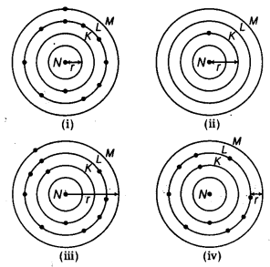
(a) (i) and (i)
(b) (ii) and (iii)
(c) (iii) and (iv)
(d) (i) and (iv)
Answer:
(b) Atomic radius is the distance between nucleus and outermpst shell [consisting electron(s)]. Hence (ii) and (iii) are the correct representations.
Question 12.
Which of the following statement(s) about the modern periodic table are incorrect?
(i) The elements in the modern periodic table are arranged on the basis of their decreasing atomic numbers.
(ii) The elements in the modern periodic table are arranged on the basis of their increasing atomic masses.
(iii) Isotopes are placed in adjoining group(s) in the periodic table.
(iv) The elements in the modern periodic table are arranged on the basis of their increasing atomic number. [NCERT Exemplar]
(a) Only (i)
(b) (i), (ii) and (iii)
(c) (i), (ii) and (iv)
(d) Only (iv)
Answer:
(b) Only statement (iv) is correct. All the elements in the modern periodic table are arranged on the basis of their increasing atomic number. All the isotopes can be placed at one place in the same group of the periodic table.
Question 13.
The element with atomic number 14 is hard and forms acidic oxide and a covalent halide. To which of the following categories does the element belong? [NCERT Exemplar]
(a) Metal
(b) Metalloid
(c) Non-metal
(d) Left-hand side element
Answer:
(c) Its outermost shell has 4 electrons. So, it is a non-metal. Non-metal forms acidic oxide and by sharing of electrons with halogen, it forms covalent halide.
Question 14.
Arrange the following elements in the order of their decreasing metallic character Na, Si, Cl, Mg, Al. [NCERT Exemplar]
(a) Cl > Si > Al > Mg > Na
(b) Na > Mg > Al > Si > Cl
(c) Na > Al > Mg > Cl > Si
(d) Al > Na > Si > Ca > Mg
Answer:
(b) Metals lie on the extreme left side of the periodic table. Metallic character decreases from left to right in a period. Na, Si, Cl, Mg, Al belong to same period in the order Na, Mg, Al, Si, Cl. On moving in a i period from left to right, the metallic character decreases. Thus, the order of decreasing metallic character is: Na > Mg > Al > Si > Cl
Question 15.
Which of the following set of elements is written in order of their increasing metallic character? [NCERT Exemplar]
(a) Be, Mg, Ca
(b) Na, Li, K
(c) Mg, Al, Si
(d) C, O, N
Answer:
(a) Metallic character increases as we go down in a group.
Question 16.
Which one of the following does not increase while moving down the group of the periodic table? [NCERT Exemplar]
(a) Atomic radius
(b) Metallic character
(c) Valence electrons
(d) Number of shells in an element
Answer:
(c) Elements in each group has some number of valence electrons hence have same valency and thus exhibit similar chemical properties.
Question 17.
| IA | IIA | IIIA | IVA | VA | VIA | VIIA | VIII |
| X | Y | ||||||
| Z |
The elements X, Y and Z are shown in a portion of periodic table. What would be the representations of ionic forms of X and Z respectively?
(a) X– and Z+
(b) X+ and Z–
(c) X2- and Z2+
(d) X2+and Z2-
Answer:
(a) X having 1 electron less than that of Y, which is a noble gas (having complete octet), will tend to gain 1 electron while Z will tend to lose 1 electron to achieve complete octet configuration. Hence, they will have ionic formula as X– and Z+.
Question 18.
which of the following elements will form an acidic oxide? [NCERT Exemplar]
(a) An element with atomic number = 7
(b) An element with atomic number = 3
(c) An element with atomic number = 12
(d) An element with atomic number = 19
Answer:
(a) Non-metals form acidic oxides in general. Non-metals have 4 to 8 electrons in the outermost shell. The electronic configuration of given elements are (a) i.e. 7 = 2, 5 (b) i.e. 3 =2, 1 (c) i.e. 12 =2, 8, 2 (d)i.e. 19=2, 8, 8,1.
So, element with atomic number = 7 (electronic configuration = 2, 5) with is non-metal (N) and it will form an acidic oxide. Rest three elements with atomic- numbers, 3 (Li), 12 (Mg) and 19 (K) are metals and hence, form basic oxides.
Question 19.
what type of oxide would Eka-aluminium form? [NCERT Exemplar]
(a) EO3
(b) E3O2
(C) E2O3
(d) EO
Answer:
(c) Gallium has a valency of 3. Hence, it forms an oxide having molecular formula E2O3. In other options, valency of E is not 3.
Question 20.
The diagram given below shows the position of elements in a portion of the periodic table. Ionic compound is formed between ………. and ………
| IA | IIA | IIIA | IVA | VA | VIA | VIIA | VIII |
| D | B | ||||||
| C | E | A |
(a) A and B
(b) B and E
(c) C and D
(d) D and E
Answer:
(D) being in group IIA is most electropositive among given elements while E being in group VIIA is most electronegative among the given elements. Hence, both of these will form ionic compound, more readily than the other given elements.
Question 21.
Element X forms a chloride with formula, XCl2, which is a solid with a high melting point. X would most likely to be in the same group of the periodic table as [NCERT]
(a) Na
(b) Mg
(c) Al
(d) Si
Answer:
(b) The formula of chloride is XCl2, that means the valency of the element X is 2. The element having valency 2 will be present in group 2. Out of the given choices magnesium (Mg) belongs to group 2.
Question 22.
The adjacent diagram represents the arrangement of the atoms of an element (having valency = 4) forming giant covalent network.
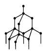
Identify the heavy metal which belongs to same group as the element discussed above.
(a) As
(b) Bi
(c) Pb
(d) Hg
Answer:
(c) The element discussed in diagram is carbon. Carbon (C) and lead (Pb) both belong to group IVA.
Question 23.
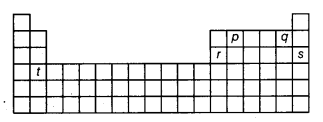
Arrange the elements, represented by alphabets p, q, r, s and t in the above shown outline of periodic table, in increasing order of their valency.
(a) t < q < r < s < p
(b) s < t < q < r < p
(c) s < q < t < r < p
(d) q < s < t < p < r
Answer:
(c) p(group IVA), q(group VIIA), r(group IILA) s(group VIII) and t(group IIA) has valency 4, 1, 3, 0 and 2 respectively hence the correct order of increasing valency is: s(0) < q(1) < t(2) < r(3) < p(4)
Question 24.
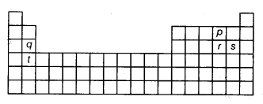
The diagram given above represents outline of the periodic table. The alphabets p, q, r, s and t represent elements. Which one of the following pairs of alphabets represents elements which consists of same number of shells in their atom?
(a) p and q
(b) r and t
(c) p and s
(d) g and s
Answer:
(d) Elements q and s belong to same period of the periodic table and hence, will have same number of shell.
NCERT Solutions for Class 10 Science Chapter 5 Periodic Classification of Elements (Hindi Medium)
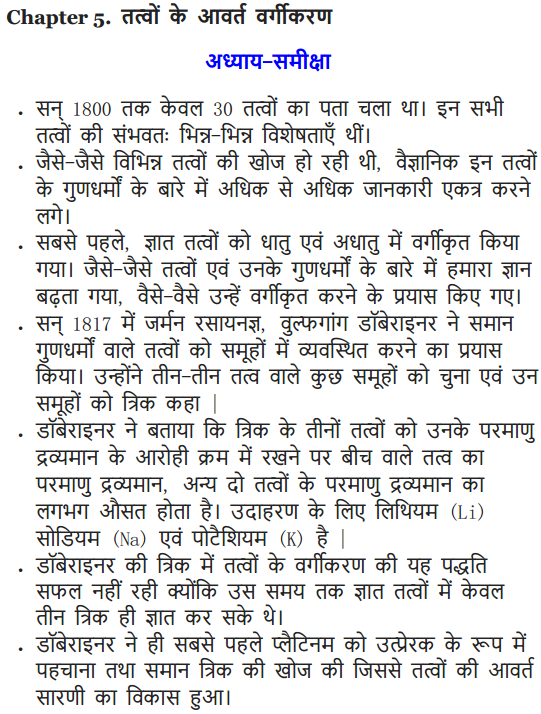
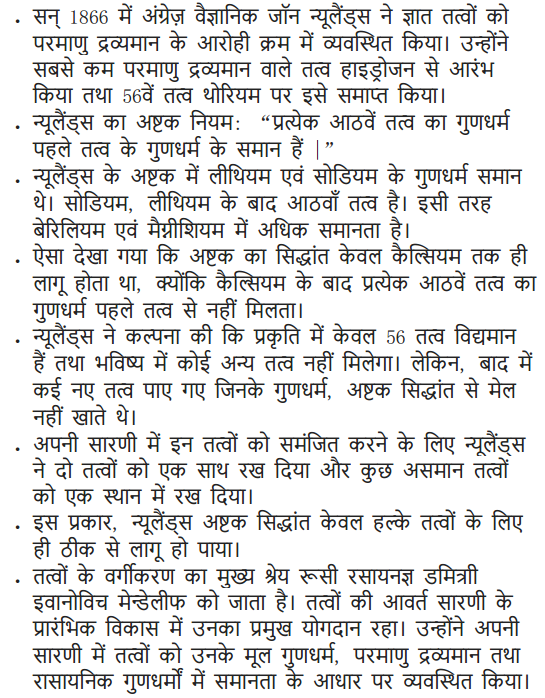
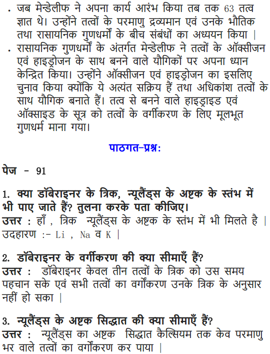
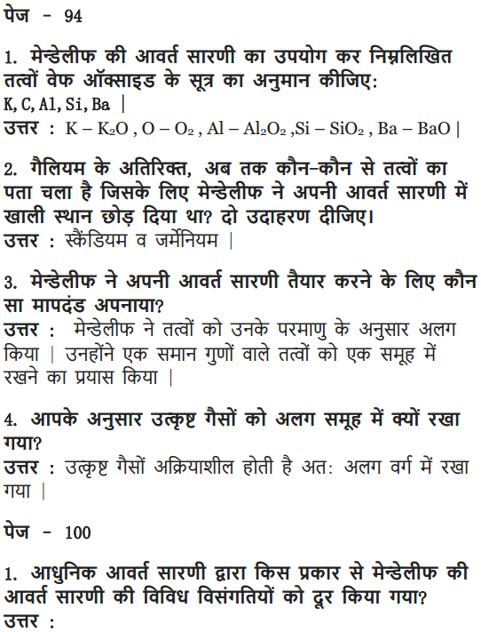
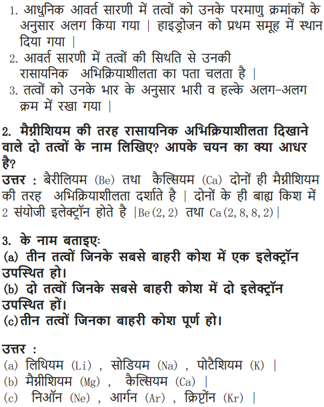
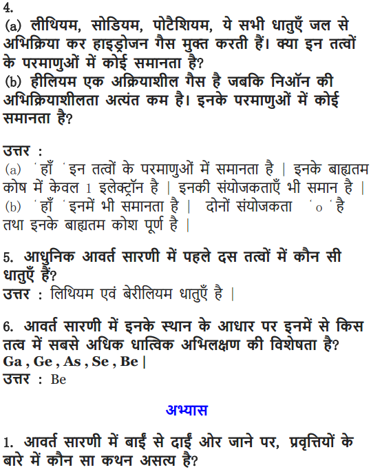

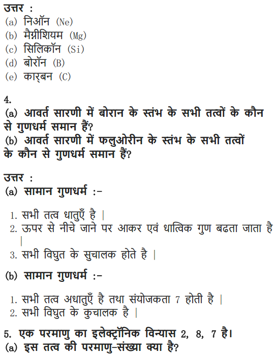
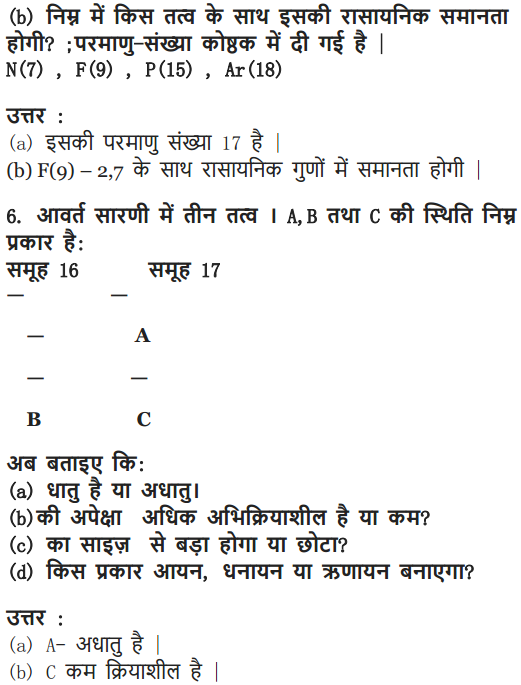
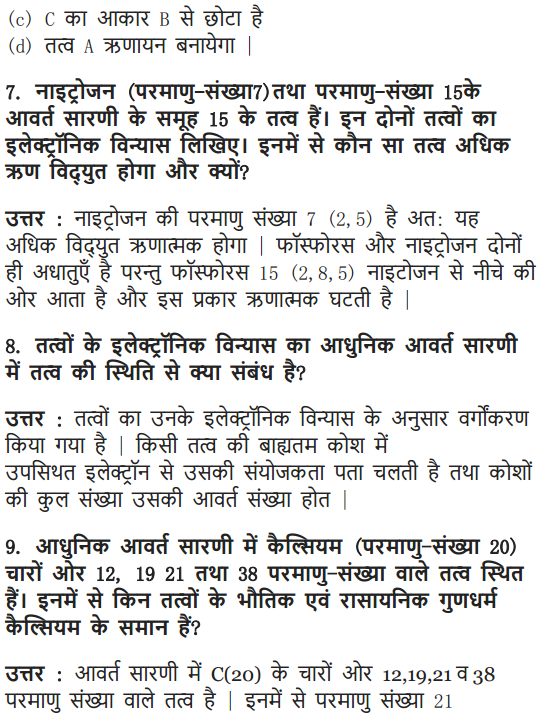
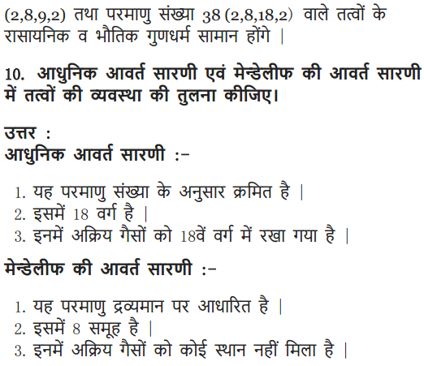
Class 10 Science Periodic Classification of Elements Mind Map
Dobereiners’s Triads
- Dobereiner found that when elements are arranged into groups of three in the order of their increasing atomic mass, the atomic mass of the element; which comes in the middle, is the arithmetic mean of rest of the two.
- He arranged three elements in one group which is known as Dobereiner’s Triads. For e.g.:
(Li) 7.0 (Na) 23.0 (K) 39.0 (Ca) 40.0 (Sr) 87.5 (Ba) 137.0 - Here atomic mass of sodium is equal to arithmetic mean of atomic masses of lihtium and potassium. Similarly, atomic mass of strontium is equal to arithmetic mean of atomic masses of calcium and barium
Limitations of Doberiner’s Triads
- He could identify only a few such triads and so the law could not gain importance.
- In the triad of Fe, Co, Ni, all the three elements have a nearly equal atomic mass and thus it does not follow the above law.
Mendeleev’s Periodic Classification
- Mendeleev periodic law, states that ‘the properties of elements are the periodic function of their atomic masses’.
- Mendeleev’s periodic table contains vertical columns called ‘groups’ and horizontal rows called ‘periods’.
Characteristics of the Mendeleev’s Periodic Table
- The elements are arranged in vertical rows called groups and horizontal rows called periods.
- There are eight groups indicated by Roman Numerals I, II, III, IV, V, VI, VII, VIII. The elements belonging to first seven groups have been divided into sub-groups designated as A and B on the basis of similarities. Group VIII consists of nine elements arranged in three triads.
- There are six periods (numbered 1,2,3,4,5 and 6).
Limitation of Mendeleev’s Periodic Table
- Some elements in Mendeleev’s Table have not been arranged in the increasing order of their atomic masses. For example, Co and Ni.
- Hydrogen forms similar compounds as Group 1 elements. However, it also forms similar diatomic molecules as Group 7 elements (H2, F2, C12, Br2, 12). Hence, it could not be assigned a fixed position in the table.
- Isotopes posed a challenge to Mendeleev’s table. For example, Cl has two major isotopes – Cl-35 and Cl-37.
Merits of Mendeleev’s Periodic Table
- Mendeleev left some blank spaces in his periodic table in order to place the elements having similar properties in the same group.
- Mendeleev predicted the discovery of some elements and named them as eka-boron, eka- aluminium and eka-silicon.
- One of the strengths of Mendeleev, s periodic table was that, when inert gases were discovered they could be placed in a new group without disturbing the existing order.
Newlands’ Law of Octaves
- According to this law “if elements are arranged by the increasing order of their atomic masses, property of every eighth element repeats.”
- The arrangement of elements in Newlands’ Octave resembles the musical notes.
Limitation of Newlands’ Octaves
- Law of Octaves could be valid up to calcium only; as after calcium, elements do not obey the rules of Octaves.
- It was assumed by Newlands that only 56 elements existed in nature and no more elements would be discovered in the future
- More than one element had to be placed in some of the groups; in order to place the elements having similar properties in one group. But in order to do so, he also put some dissimilar elements in same group.
- Iron; which has similar property as cobalt and nickel, was placed far from them.
- Cobalt and nickel were placed in the group with chlorine and fluorine in spite of having different properties.
Modern Periodic Table
In 1913, Henry Moseley showed that atomic number of an element is a more fundamental property than its atomic mass. According to this law “’properties of elements are a periodic function of their atomic number”.
Trends in Modern Periodic Table
| Property | Valency | Atomic Size |
Metallic Character |
Nonmetallic Character |
Electronegativity |
| Variation in period | Increases from 1 to 4 then decreases to zero | Decreases | Decreases | Increases | Increases |
| Reason | No. of atomic shells remains the same & atomic number increases by 1 unit. | This is due to an increase in nuclear charge which tends to pull the electrons closer to the nucleus and reduces the size of the atom. | Effective nuclear charge increases. Hence tendency to lose electron decreases. | Effective nuclear charge increases. Hence tendency to gain electron increases | |
| Variation in group | Remains same | Increases | Increases | Decreases | Decreases |
| Reason | New shells are being added as we go down the group. This increases the distance between the outermost electrons and the nucleus so that the atomic size increases in spite of the increase in nuclear charge. | Effective nuclear charge decreases | Effective nuclear charge
decreases. Hence tendency to gain electron decreases |
Position of Elements in the Modern Periodic Table
Position of Elements
| No of Valence Electrons | Group | No. of Shell | Period |
| 1 | 1 | 1 | 1 |
| 2 | 2 | 2 | 2 |
| 3 | 13 | 3 | 3 |
| 4 | 14 | 4 | 4 |
| 5 | 15 | 5 | 5 |
| 6 | 16 | 6 | 6 |
| 7 | 17 | 7 | 7 |
| 8 | 18 |
Elements are placed in groups according to the number of valence electrons and placed in periods according to the number of shells present in them.
Helium has valence electrons equal to 2, but it is placed in group number 18 because it is a noble gas and has completely filled outermost shell.
We hope the detailed information regarding NCERT Solutions For Class 10 Science Chapter 5 Periodic Classification Of Elements is helpful. For any query related to Class 10 Science Chapter 5 NCERT Solutions for Periodic Classification Of Elements, kindly drop your questions in the comment box below and we will get back to you as soon as possible.
NCERT Solutions for Class 10 Science All Chapters
- Chapter 1 Chemical Reactions and Equations
- Chapter 2 Acids, Bases and Salts
- Chapter 3 Metals and Non-metals
- Chapter 4 Carbon and Its Compounds
- Chapter 5 Periodic Classification of Elements
- Chapter 6 Life Processes
- Chapter 7 Control and Coordination
- Chapter 8 How do Organisms Reproduce?
- Chapter 9 Heredity and Evolution
- Chapter 10 Light Reflection and Refraction
- Chapter 11 Human Eye and Colourful World
- Chapter 12 Electricity
- Chapter 13 Magnetic Effects of Electric Current
- Chapter 14 Sources of Energy
- Chapter 15 Our Environment
- Chapter 16 Management of Natural Resources